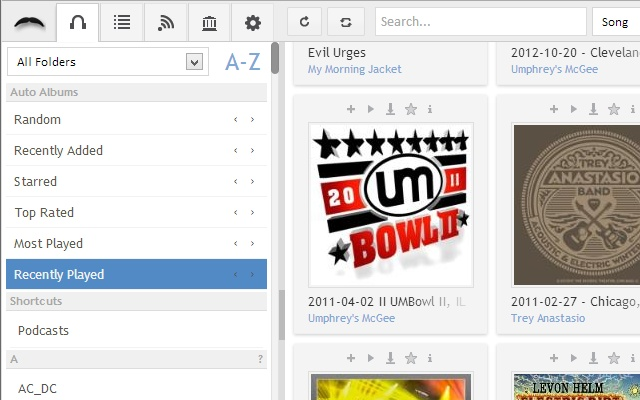

Si tienes el servidor de música Supysonic, Subsonic, Airsonic,… Cualquiera de los servidores que utilizan la api de Subsonic, quizás quieras utilizar el navegador web como cliente.
Jamstash es un proyecto que pretende el tener un cliente de Subsonic en tu navegador web, instalable en Google Chrome a través de su tienda de aplicaciones.
Aprovechando el código de la aplicación disponible en GitHub, he montado un contenedor partiendo de un Alpine Linux y un servidor de Nginx.
Este cliente permite el reproducir, crear listas, añadir a favoritos, descargar canciones, etc…

Vamos a ver como montar el contenedor
docker run --name jamstash -d -p 80:80 ugeek/jamstash:arm
docker run --name jamstash -d -p 80:80 ugeek/jamstash:amd64
Para utilizar el cliente Jamstash, según la línea del ejemplo anterior, corre por el puesto 80. Podemos personalizar el puerto cambiando a un puerto libre disponible.
Aquí utilizariamos el puerto 90.
-p 90:80
Siguiendo este nuevo ejemplo, nos conectaríamos desde nuestro navegador web a http://tu_ip:90
Publicado por Angel el martes 08 octubre del 2019
También te puede interesar:
Powered by org-bash-blog
Writing in orgmode whith emacs

Este obra está bajo una licencia de Creative Commons Reconocimiento-NoComercial-CompartirIgual 4.0 Internacional.